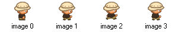
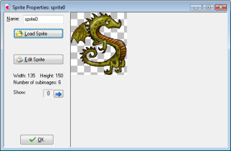
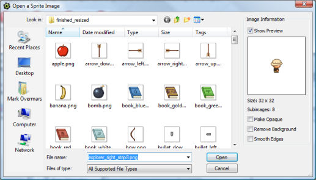

When you make a game you normally start by collecting a set of nice sprites for the objects in your game. A considerable number of useful sprites is bundled with Game Maker. Other collections of interesting sprites can be found on the Game Maker website. Many more sprites can be found on the web, normally in the form of png or animated gif files.
To create a sprite, choose the item Create Sprite from the Resources menu, or use the corresponding button on the toolbar. The following form will pop up.

At the top-left you can indicate the name of the sprite. All sprites (and all other resources) have a name. It's best to give each sprite a descriptive name. Make sure all resources get different names. Even though this is not strictly required, you are strongly advised to use only letters and digits and the underscore symbol (_) in a name of a sprite (and any other resource) and to let it start with a letter. In particular don't use the space character. This will become important once you start using code.
To load a sprite, click on the button Load Sprite. A special file dialog opens in which you can choose the sprite:

The left part looks like the standard file selector in which you can select the sprite that you want. At the right you get a preview of the animated sprite and some information about it. Here you can also indicate that you want to make the sprite opaque (that is, remove any transparent parts), whether to remove the background, making it transparent (default), and whether to smooth the edges of the sprite, which can improve its appearance. When you are happy with the result press Open to load the sprite.
Game Maker can load many different graphics files. When you load an animated gif, the different subimages form the sprite images. When the file name ends with _stripXX, with XX a number, it is considered to contain a strip of XX subimages next to each other (not for gif files). For example, a image file with name ball_strip4.png is assumed to contain 4 subimages.
Once the sprite is loaded the first subimage is shown on the right. When there are multiple sub- images, you can cycle through them using the arrow buttons.
With the button Edit Sprite you can edit the sprite, or even create a completely new sprite. Game Maker has an extensive built-in sprite and image editor. For more information see the sections on Editing your sprites and on Editing individual subimages.